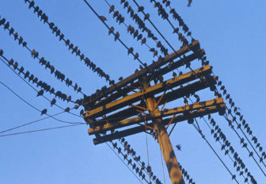

Introduction aux paramètres RF
© J.L. Noullet 2013-2016
Objet
L'objectif de ce document est de donner une introduction concrète aux paramètres spécifiques qui ont été inventés
pour satisfaire les besoins de l'électronique
RF (
Radio-
Fréquences) :
- ligne de transmission
- adaptation d'impédance
- coefficients de réflexion
- abaque de Smith
- ondes stationnaires
- paramètres S (Scattering Parameters)
Ces concepts doivent être en oeuvre chaque fois que des éléments de circuits sont interconnectés par des liaisons dans
lesquelles le temps de propagation n'est pas négligeable par rapport à l'échelle de temps des signaux.
Ou encore chaque fois que les dimensions du système ne sont pas négligeables par rapport aux longueurs d'ondes des signaux.
Cela peut éventuellement concerner des projets qui ne sont pas des systèmes de radio communication.

Quelques exemples :
| câble USB | 1.5 m | horloge 480 MHz |
| liaison CPU-RAM dans un PC | 10 cm | horloge 1.2 GHz |
| ligne téléphonique analogique | 100 km | audio max 3 kHz |
| sonde instrument labo RF | 5 cm | 30 GHz |
Chapitres